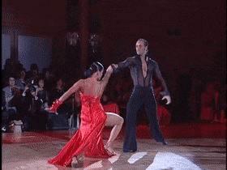

Pasodoble
Pode ser considerado, em essência o estandarte sonoro que o distingue em todas as partes do mundo. Trata-se de um ritmo alegre, cheio de elegância, castiço, flamenco algumas vezes, sempre sendo espelhado pelo mais genuíno sabor espanhol.
Se conhece como pasodoble o baile originado na Espanha entre 1533 e 1538 no qual a mulher desenvolve um papel importante. Utilizado em varias regiões para a celebração de eventos. Foi uma parte muito importante para o desenvolvimento do país.
É, ademais, um dos poucos bailes em dupla que seguem conservando hoje em dia; está presente em muitas festas (verbenas populares) e segue formando parte da tradição em todas as regiões da Espanha.
Como é dançado o pasodoble ?

Uma das principais características desse estilo de dança é a atitude durante a apresentação. É necessário que os dançarinos transpareçam elegância enquanto dançam. Para começar, o homem se coloca na frente da parceira, ligeiramente separados,
com o olhar fixo um no outro. Essa distância entre eles permite realizar alguns movimentos sem que invadam o espaço alheio
Em algumas ocasiões, o bailarino pode se separar um pouco da companheira de dança para realizar alguns passos sem correr o risco de tropeçar ou trombar nela. Com um ritmo constante, todos os passos dessa dança são marcados e sem pausas. No nível
iniciante, por norma, o homem sempre começa com o pé esquerdo e a mulher com o direito.
Por conta da sua batida ritmada, esse tipo de dança permite que o casal caminhe por qualquer direção e varie essa caminhada sem seguir um padrão. Isso possibilita que a música usada na apresentação marque o início e as pausas dos movimentos realizados
pelos dançarinos.
É importante frisar que a mulher não exerce um papel submisso nessa dança. O homem simplesmente oferece uma direção de movimentos para a parceira e é ela, ao sentir o corpo do parceiro e ao exercitar a predisposição às mudanças de movimento, que
aceita as indicações do bailarino. Isso faz com que ambos controlem as decisões durante a coreografia.
Quais são as vestimentas adequadas para os dançarinos?
Por estar diretamente ligada às touradas espanholas, os trajes dessa dança devem refletir a emoção feroz da luta. Normalmente, o homem é retratado como o toureiro enquanto a parceira faz o papel de sua capa, do próprio touro ou da sombra do parceiro.
Geralmente, as vestimentas do dançarino incluem uma calça, camisa branca, gravata e um terno com ombreiras que lembram as vestimentas de um toureiro ou um colete. Já a roupa adequada para a mulher é composta por um vestido longo com saia cheia
e pode incluir um bolero que combine com os adornos da outra peça. Em relação aos calçados e acessórios, as moças podem utilizar um sapato de salto alto com uma tira amarrada nos tornozelos, para evitar que ele escorregue durante a dança.
Para completar o visual, podem usar um leque que combine com a roupa. Os homens podem utilizar um sapato ou bota preta. Já em relação aos acessórios, máscaras e chapéus fazem parte do figurino deles.
Por fim, é interessante ressaltar a popularização do passo doble no Brasil, pois muitas pessoas têm se interessado por esse estilo devido às apresentações constantes em programas de TV de competição de dança.
Leia mais...